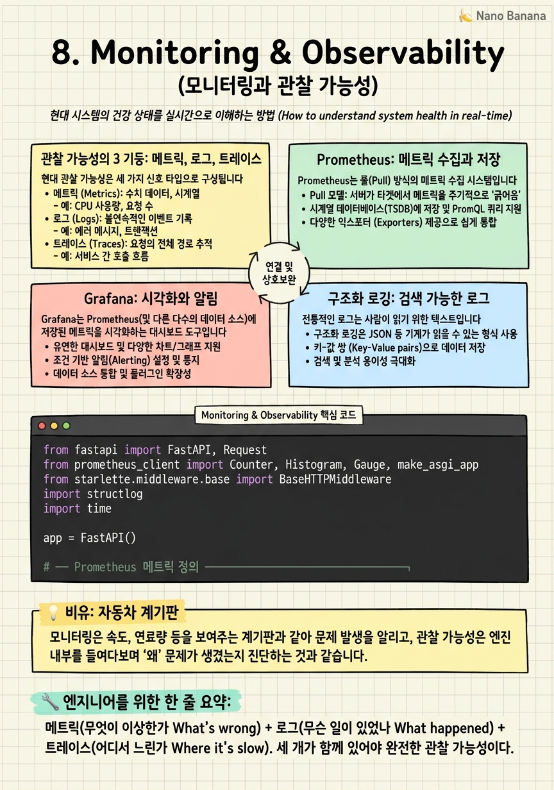

Monitoring & Observability

🎯 학습 목표
- 메트릭, 로그, 트레이스 — 관찰 가능성의 3 기둥을 구분하고 각 사용 사례를 설명할 수 있다
- FastAPI 서비스에 Prometheus 메트릭을 추가할 수 있다
- Grafana로 서비스 대시보드를 구성하고 알림 룰을 설정할 수 있다
- 구조화 로깅(structured logging)으로 로그를 검색 가능하게 만들 수 있다
- AI 서비스에 특화된 메트릭(모델 드리프트, 추론 레이턴시 분포)을 정의할 수 있다
"측정할 수 없으면 개선할 수 없다." 프로덕션 AI 서비스에서 모니터링은 선택이 아닙니다. 모델이 예측을 잘못 내리고 있는지, API 레이턴시가 SLA를 위반하는지, 특정 사용자 그룹에서 오류율이 높은지 — 이 모든 것을 모르면 서비스가 조용히 망가지고 있어도 알 수 없습니다.
관찰 가능성(Observability) 은 시스템의 내부 상태를 외부 출력(메트릭, 로그, 트레이스)으로 추론하는 능력입니다. 단순 모니터링("CPU가 80%다")을 넘어, 알 수 없는 실패 모드를 질문으로 탐색하는 능력입니다("왜 특정 사용자 요청만 느린가?").
AI 서비스 모니터링은 일반 서비스보다 한 층 더 복잡합니다. 코드가 변경되지 않아도 모델 성능이 저하될 수 있습니다(Data Drift). GPU 활용률과 배치 크기는 비용과 직결됩니다. 모델 예측 분포 변화는 표준 시스템 메트릭으로는 감지할 수 없습니다.
핵심 내용
관찰 가능성의 3 기둥: 메트릭, 로그, 트레이스
현대 관찰 가능성은 세 가지 신호 타입으로 구성됩니다.
메트릭(Metrics) 은 숫자로 표현된 시계열 데이터입니다. CPU 사용률, 요청 수, 오류율, 레이턴시 등. 숫자이므로 집계·비교·알림이 쉽습니다. 저장 비용이 낮고 오랜 기간 보관 가능합니다. Prometheus가 대표적입니다.
로그(Logs) 는 이벤트의 텍스트 기록입니다. "사용자 123이 모델 요청을 보냈다", "DB 쿼리가 2.3초 걸렸다" 같은 문장 형식입니다. 상세한 문맥을 제공하지만 볼륨이 크고 검색이 느립니다. ELK Stack(Elasticsearch + Logstash + Kibana) 또는 Loki + Grafana가 사용됩니다.
트레이스(Traces) 는 요청이 여러 서비스를 거치는 경로를 추적합니다. "사용자 요청이 API → 인증 서비스 → 모델 서버 → DB를 거치는 데 각각 몇 ms가 걸렸는가?" 마이크로서비스에서 어떤 서비스가 병목인지 찾는 데 핵심입니다. OpenTelemetry + Jaeger가 표준입니다.
세 신호는 서로 보완합니다. 메트릭으로 이상을 감지하고, 로그로 원인을 찾고, 트레이스로 어느 서비스가 문제인지 정확히 파악합니다.
Prometheus: 메트릭 수집과 저장
Prometheus는 풀(Pull) 방식의 메트릭 수집 시스템입니다. 서비스가 메트릭을 Prometheus에 푸시하는 것이 아니라, Prometheus가 주기적으로(보통 15초) 서비스의 /metrics 엔드포인트를 스크랩(Scrape) 합니다.
Prometheus는 4가지 메트릭 타입을 지원합니다.
- Counter: 단조 증가하는 값. 요청 수, 오류 수. 항상 증가하며 재시작 시 0으로 리셋.
- Gauge: 임의로 오르내리는 값. CPU 사용률, 현재 활성 연결 수, GPU 메모리 사용량.
- Histogram: 값의 분포를 버킷으로 표현. 레이턴시 분포(50th, 95th, 99th 백분위수) 계산에 사용.
- Summary: Histogram과 유사하지만 분위수를 클라이언트에서 계산.
PromQL 은 Prometheus의 쿼리 언어입니다. 강력하지만 처음엔 낯섭니다. rate(http_requests_total[5m])는 5분 이동 평균 초당 요청 수입니다. histogram_quantile(0.99, rate(request_duration_seconds_bucket[5m]))는 최근 5분간 요청의 P99 레이턴시입니다.
Grafana: 시각화와 알림
Grafana는 Prometheus(및 다른 다수의 데이터 소스)에 저장된 메트릭을 시각화하는 대시보드 도구입니다.
좋은 서비스 대시보드는 RED 방법론 을 따릅니다.
- R(Rate): 초당 요청 수 — 트래픽이 얼마나 들어오는가? - E(Errors): 오류율 — 요청 중 몇 %가 실패하는가? - D(Duration): 레이턴시 — 요청 처리에 얼마나 걸리는가?
AI 서비스 대시보드에는 추가로 GPU 활용률, 모델별 추론 시간 분포(P50/P95/P99), 캐시 히트율, 배치 크기 분포를 포함합니다.
알림 룰 은 특정 조건이 충족되면 Slack, PagerDuty, 이메일로 알림을 보냅니다. 예를 들어 오류율이 5분간 1%를 초과하거나, P99 레이턴시가 2초를 넘으면 온콜 담당자에게 알립니다.
알림 설계 시 핵심 원칙은 알림 피로(Alert Fatigue) 를 피하는 것입니다. 너무 많은 알림은 무시됩니다. 실제로 대응이 필요한 상황에만, 그리고 즉시 대응 가능한 사람에게 알림을 보냅니다.
구조화 로깅: 검색 가능한 로그
전통적인 로그는 사람이 읽기 위한 텍스트입니다. 2024-01-15 10:23:45 ERROR Request failed for user 123. 이 로그에서 "지난 24시간 동안 오류가 발생한 사용자 목록을 추출하라"는 질문에 grep과 awk로 씨름해야 합니다.
구조화 로깅(Structured Logging) 은 로그를 JSON 형태로 출력합니다.
`json
{"level": "error", "timestamp": "2024-01-15T10:23:45Z", "user_id": 123, "request_id": "req-abc", "error": "model timeout", "duration_ms": 5023}
`
이제 Elasticsearch나 CloudWatch에서 user_id: 123 AND level: error로 정확하게 필터링할 수 있습니다.
파이썬에서는 structlog 라이브러리를 사용합니다. bound_logger로 요청별 컨텍스트(request_id, user_id)를 자동으로 모든 로그에 포함시킵니다.
로그 레벨 은 중요도에 따라 DEBUG → INFO → WARNING → ERROR → CRITICAL로 구분합니다. 프로덕션에서는 INFO 이상만 출력합니다. DEBUG 로그를 프로덕션에 켜두면 성능 저하와 비용 폭발이 발생합니다.
AI 서비스 특화 모니터링: 모델 드리프트
AI 서비스 모니터링에서 일반 서비스와 다른 점은 모델 성능 모니터링 이 필요하다는 것입니다.
데이터 드리프트(Data Drift) 는 입력 데이터의 분포가 학습 시와 달라지는 현상입니다. 예를 들어 텍스트 분류 모델을 구어체로 학습했는데 서비스 후 문어체 데이터가 들어오기 시작하면, 코드나 인프라에 아무 변화가 없어도 모델 정확도가 하락합니다.
예측 분포 모니터링 은 모델 출력의 통계(평균, 분산, 클래스 비율)를 시계열로 추적합니다. 갑자기 모든 예측이 특정 클래스로 몰리거나, confidence score가 낮아지면 드리프트 신호입니다.
실용적인 AI 메트릭들:
- 추론 레이턴시 히스토그램: P50/P95/P99 백분위수. P99가 SLA를 위반하면 즉시 알림.
- GPU 활용률: 낮으면 배치 크기를 키우거나 인스턴스를 줄여 비용을 절감할 수 있습니다.
- 모델별 요청 수: A/B 테스트에서 각 모델 버전의 트래픽 비율 확인.
- 예측 신뢰도 분포: 평균 confidence가 임계값 이하로 떨어지면 모델 재학습 트리거.
💡 비유로 이해하기
자동차 없이 관찰 가능성을 이해하기 어렵습니다. 자동차를 운전할 때 우리는 항상 계기판(대시보드)을 봅니다. 속도계(현재 요청 처리 속도), 연료 게이지(남은 리소스), 온도계(CPU 온도), 체크 엔진 경고등(오류 알림).
로그는 블랙박스 기록장치 입니다. 사고 후 무슨 일이 있었는지 정확히 재현할 수 있습니다. "10:23에 브레이크를 밟았고, 10:23:02에 타이어가 잠겼다"처럼 상세한 이벤트 기록입니다.
분산 트레이싱은 GPS 내비게이션의 경로 추적 입니다. "서울에서 부산까지 가는 동안 경부고속도로 33km 지점에서 15분간 정체가 있었다"처럼, 마이크로서비스를 통과하는 요청의 어느 구간에서 시간이 걸렸는지 정확히 보여줍니다.
💻 코드 예시
FastAPI 서비스에 Prometheus 메트릭과 구조화 로깅을 추가하는 패턴입니다. 요청 수, 레이턴시 히스토그램, 오류율을 자동으로 측정합니다.
from fastapi import FastAPI, Request
from prometheus_client import Counter, Histogram, Gauge, make_asgi_app
from starlette.middleware.base import BaseHTTPMiddleware
import structlog
import time
app = FastAPI()
# ── Prometheus 메트릭 정의 ──────────────────────────────
REQUEST_COUNT = Counter(
"http_requests_total",
"Total HTTP requests",
["method", "endpoint", "status_code"],
)
REQUEST_LATENCY = Histogram(
"http_request_duration_seconds",
"HTTP request latency",
["endpoint"],
buckets=[0.05, 0.1, 0.25, 0.5, 1.0, 2.5, 5.0], # SLA 기준점 포함
)
ACTIVE_REQUESTS = Gauge("http_active_requests", "Active HTTP requests")
INFERENCE_LATENCY = Histogram(
"inference_duration_seconds",
"Model inference latency",
["model_name"],
buckets=[0.01, 0.05, 0.1, 0.5, 1.0, 5.0],
)
# ── 구조화 로깅 설정 ────────────────────────────────────
structlog.configure(
processors=[
structlog.processors.TimeStamper(fmt="iso"),
structlog.stdlib.add_log_level,
structlog.processors.JSONRenderer(), # JSON으로 출력
]
)
logger = structlog.get_logger()
# ── 메트릭 수집 미들웨어 ────────────────────────────────
class MetricsMiddleware(BaseHTTPMiddleware):
async def dispatch(self, request: Request, call_next):
ACTIVE_REQUESTS.inc()
start = time.perf_counter()
response = await call_next(request)
duration = time.perf_counter() - start
ACTIVE_REQUESTS.dec()
REQUEST_COUNT.labels(
method=request.method,
endpoint=request.url.path,
status_code=response.status_code,
).inc()
REQUEST_LATENCY.labels(endpoint=request.url.path).observe(duration)
# 구조화 로그
logger.info(
"request_completed",
method=request.method,
path=request.url.path,
status=response.status_code,
duration_ms=round(duration * 1000, 2),
)
return response
app.add_middleware(MetricsMiddleware)
app.mount("/metrics", make_asgi_app()) # Prometheus 스크랩 엔드포인트Counter, Histogram, Gauge는 메트릭 타입입니다. 레이블(method, endpoint)을 통해 메트릭을 차원별로 세분화합니다. Histogram의 buckets는 P50/P95/P99 계산을 위한 버킷 경계입니다. MetricsMiddleware는 모든 요청을 투명하게 계측하므로 각 엔드포인트 함수에 계측 코드를 넣을 필요가 없습니다.
🏭 현업에서의 평가
✅ 시니어가 보는 것
- 메트릭, 로그, 트레이스 각각을 언제 써야 하는지 구분하는가
- 레이턴시를 평균이 아닌 P95/P99로 측정하는 이유를 아는가
- 알림 피로를 줄이기 위해 어떻게 알림 룰을 설계하는가
⚠️ 레드 플래그
- 레이턴시를 평균으로만 측정하는 경우 (꼬리 레이턴시를 놓침)
- 모든 DEBUG 로그를 프로덕션에 활성화하는 경우
- 알림이 너무 많아 온콜 담당자가 알림을 무시하게 되는 경우
🎤 예상 인터뷰 질문
- 평균 레이턴시는 정상인데 일부 사용자가 응답이 느리다고 민원을 넣습니다. 어떻게 디버깅하겠어요?
- 모델이 코드 변경 없이 갑자기 정확도가 떨어졌습니다. 어떻게 탐지하고 대응하겠어요?
- 분산 환경에서 하나의 요청이 5개 서비스를 거칠 때 병목을 어떻게 찾겠어요?
✨ 핵심 요약
3 기둥
메트릭(무엇이 이상한가) + 로그(무슨 일이 있었나) + 트레이스(어디서 느린가). 세 개가 함께 있어야 완전한 관찰 가능성이다.
P99 레이턴시
평균 레이턴시는 거짓말한다. 1%의 사용자가 10초를 기다리는 것도 평균엔 잘 안 보인다. 항상 P95/P99를 본다.
구조화 로깅 = JSON
로그를 JSON으로 출력하면 Elasticsearch에서 user_id: 123으로 필터링할 수 있다. 텍스트 grep은 느리고 오류가 많다.
RED 방법론
모든 서비스 대시보드는 Rate(초당 요청), Errors(오류율), Duration(레이턴시) 세 지표를 기본으로 한다.
알림 피로 주의
알림이 너무 많으면 모두 무시된다. 즉각 대응이 필요한 심각한 상황에만 알림을 보낸다.
AI 전용 메트릭
모델 confidence 분포, 입력 데이터 통계, GPU 활용률은 AI 서비스만의 모니터링 차원이다.